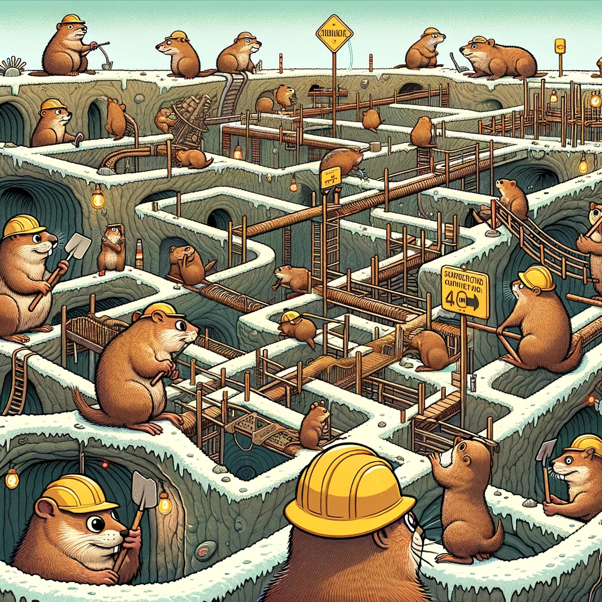

ethos of this digital garden
Last modified on December 26, 2023
i’m working on it
which might become apparent, when you run into unfinished thoughts, TODOs, dead ends, etc. etc. it’s all under construction!

i want to think / work in public
hopefully this d.g. would be networked with other people’s too at some pt
traversing it should be like a natural form of spaced repetition
ideally, with the right graph structure, the most important concepts / nodes should have a lot of ingoing and outgoing links to / fro them. so traversing the garden would naturally lead me to review things i think are important.